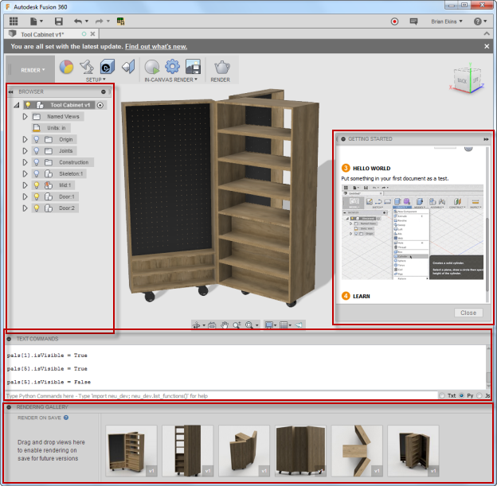
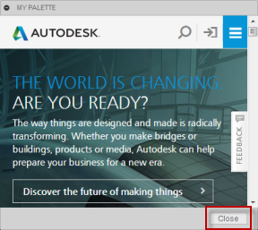
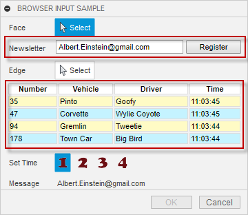
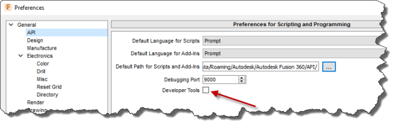

Palettes provide a very different way of interaction than the typical script or command. However, you are already used to seeing and working with palettes because Fusion uses palettes for several built-in capabilities. The image below shows several built-in palettes displayed; the browser, Getting Started, Text Commands, and the Rendering Gallery.

Palettes are very distinct from command dialogs in several ways:
Your add-in and the HTML/JavaScript code loaded in the palette communicate with each other via events. Your add-in can call a method that results in an event being fired that the JavaScript code associated with the HTML can handle and respond to. The JavaScript associated with the HTML can also call a method that results in an event being fired to your add-in so it can react to changes in the palette. The JavaScript associated with the HTML cannot call the Fusion API. It must pass data to your add-in through the event, and then your add-in can call the API.
Like a command dialog, palettes can be docked to the edges of the Fusion window and other palettes. However, unlike a command dialog, you have complete control over this with a palette.
Palettes are created using the add method of the Palettes collection object, which you obtain from the UserInterface object using its palettes property. Like other collections, you can also get all the existing palettes through this collection, including the standard (built-in) Fusion palettes. For example, the code below creates a new custom palette.
palette = _ui.palettes.add('myPalette', 'My Palette', 'palette.html', False, True, True, 300, 200, True)
The first argument is the id of the palette, which must be unique with respect to all other palettes that exist in this session of Fusion. The second argument is the name as displayed at the top of the palette. The third argument references the HTML file to load into the palette. The HTML file can be defined using a full path to a file on disk or a relative path relative to the .py, .dll, .dylib file of the add-in. The example above assumes that "palette.html" is in the same location as the .py, .dll, or .dylib file. You can also reference an HTML file on the web using a URL, such as in the example below.
palette = _ui.palettes.add('myPalette', 'My Palette', 'http://www.autodesk.com', False, True, True, 300, 200, True)
palette.setPosition(800, 400)
palette.isVisible = True
The next three arguments are Boolean arguments that specify if the palette should be visible, if a "Close" button should be displayed, and if the palette should be resizable. By first creating a palette invisibly, you can set some other properties before making it visible, which the example above takes advantage of to set the position. For example, a palette displaying the Autodesk website with a "Close" button is shown below.

The next two arguments define the initial width and height of the palette. The final argument specifies if the palette should use the older CEF (Chromium Embedded Framework) browser or use the new Qt Web Browser within the palette. Fusion is switching from CEF to the Qt Web Browser to support embedded browsers in the product. While this transition occurs, Fusion is supporting both web browsers. This argument is optional and defaults to False, which means existing add-ins that don't specify this argument will behave as before and use the CEF browser. Setting the argument to True will cause the palette to use the new QT Web Browser.
When Fusion completes the transition to the QT Web Browser, support for the CEF browser will be removed from Fusion, and you will always get a QT Web Browser regardless of how the argument is set. Because of this, it is highly recommended you set this argument to true to use the new browser because when support for the CEF browser is removed, you will automatically be forced to use the QT Web Browser. The only known difference between the two is when using the adsk.fusionSendData function described below.
BrowserCommandInputs are used as part of a command. They are created the same as all other types of command inputs. In the command created event associated with the command, you call the various add methods on the CommandInputs collection to create the desired command inputs. Once they are created they are similar to palettes with how you interact with them.
The picture below is a simple example where two BrowserCommandInputs have been added to the command dialog. BrowserCommandInputs behave like other command inputs in that they are displayed in the same sequence they were created, and they have a name displayed on the left with the browser on the right. The first BrowserCommandInput looks very similar to a textbox command input but adds a button beside the text field.

The second BrowserCommandInput demonstrates creating a table that is difficult with standard command inputs. It is possible to use a TableCommandInput to display tabular data, but the TabCommandInput is used to arrange other command inputs, not to display data. With a BrowserCommandInput, a table is easily defined in HTML. Notice that in this case, it doesn't have a name to the left. All command input types can expand to the entire width of the dialog by setting their isFullWidth property to True.
Being able to have a floating browser window or a browser in your command dialog is useful but not very powerful by itself, especially when you want to use it for interaction with the user and the model. The referenced HTML can be very sophisticated, where you can use CSS and JavaScript code to make the content of the palette or command input dynamic. But where it can become much more powerful is when your add-in and the JavaScript associated with the HTML communicate. This two-way communication allows your add-in to send information to the HTML and for your HTML to send information to your add-in. This communication is done through events.
To pass information from your add-in to the JavaScript associated with the HTML, you call the sendInfoToHTML method of the Palette or BrowserCommandInput object that you created, as shown below. Two arguments let you pass two strings to the JavaScript code through the event. The first argument is the "action" argument and can be used as a qualifier to indicate what type of data is being passed. The second argument is the data itself which will often be a JSON string containing whatever information you need to pass. That's the regular use of the arguments, but Fusion doesn't validate the data being passed and makes no assumptions about what they contain so you can choose to use them in any way you want.
retVal = palette.sendInfoToHTML('send', 'This is the data.')
To handle the event on the HTML side, you need to implement a handler in your JavaScript code. An example is shown below. The return value is a string and is passed back to your add-in as the return argument of the sendInfoToHTML method. Returning an empty string is interpreted as an error, so you should always return something in both success and failure cases.
window.fusionJavaScriptHandler = {handle: function(action, data){
try {
switch (action) {
case 'send':
// Update a paragraph with the data passed in.
document.getElementById('p1').innerHTML = data
break;
case 'debugger':
debugger;
break;
}
} catch (e) {
console.log(e);
console.log('exception caught with action: ' + action + ', data: ' + data);
return 'FAILED';
}
return 'OK';
}};
To send information from the HTML to your add-in, you call the adsk.fusionSendData function. There are two arguments, the same as in the sendInfoToHTML function: one for the action and one for the data. The data is passed to your add-in in Fusion, which it receives by handling the incomingFromHTML event of the Palette object. The values of the two arguments are accessed by your add-in through the HTMLEventArgs object passed into the event handler. Your add-in can also pass a return value back to your HTML by using the returnData property of the HTMLEventArgs object.
The behavior of the adsk.fusionSendData function is different depending on if you are using the old (CEF) or new (QT) web browser. The difference is in how you obtain the return value from Fusion. With the old browser, the fusionSendData call was synchronous, which meant that your JavaScript execution was halted while it waited for Fusion to handle the event and pass back the result. The return value of the function is the value that the add-in provided through the returnData property of the HTMLEventArgs object. With the new browser, the fusionSendData call is asynchronous, which means the JavaScript code does not wait for the return but continues execution. The return value in this case is a "Promise" which results in a JavaScript function being called when the function returns. The code below illustrates using the old browser and getting the return value direction from the fusionSendData call which it then uses to update some text in the HTML.
function sendInfoToFusion(){
// Bundle the data into a JSON string.
var args = {
arg1 : 'Sample argument 1',
arg2 : 'Sample argument 2'
};
// Call the Fusion function to pass the data and trigger the incomingFromHTML event in the add-in.
var result = adsk.fusionSendData('send', JSON.stringify(args));
document.getElementById('returnValue').innerHTML = result
}
The code below is a slightly modified version that can be used with the new browser where a Promise is returned and then the return value is gotten from the Promise and used to update the text.
function sendInfoToFusion(){
// Bundle the data into a JSON string.
var args = {
arg1 : "Sample argument 1",
arg2 : "Sample argument 2"
};
// Call the Fusion function to pass the data and trigger the incomingFromHTML
// event in the add-in and get the return value by using the returned Promise.
adsk.fusionSendData("messageFromPalette", JSON.stringify(args)).then((result) =>
document.getElementById('returnValue').innerHTML = '${result}'
);
Below is an example of the handler for a pallete implemented by the add-in. It gets the two arguments through the HTMLEventArgs object passed in through the event, extracts the information from the JSON string, and displays the results in a message box.
class MyHTMLEventHandler(adsk.core.HTMLEventHandler):
def __init__(self):
super().__init__()
def notify(self, args):
try:
htmlArgs = adsk.core.HTMLEventArgs.cast(args)
data = json.loads(htmlArgs.data)
msg = "An event has been fired from the html to Fusion with the following data:\n"
msg += ' Action: {}\n arg1: {}\n arg2: {}'.format(htmlArgs.action, data['arg1'], data['arg2'])
_ui.messageBox(msg)
except:
_ui.messageBox('Failed:\n{}'.format(traceback.format_exc()))
Handling the HTML event for BrowserCommandInput objects is very similar except the event is the incomingFromHTML event available on the Command object. A single event sink is used for all the BrowserCommandInput objects you've created for the command. You use the browserCommandInput property of the HTMLEventArgs object that is passed into the event to determine which BrowserCommandInput the event is coming from.
You can see all of this in action with the Palette sample program and the BrowserCommandInput sample.
By default, the ability to use the browser developer tools is not available for the palette browser. However, there is a preference you can change so the browser developer tools are enabled, and you can debug your browser code. The preference is shown below.

It's already been mentioned that palettes do not behave like commands and remain displayed, even while commands are running. It's up to you to show and either delete or hide them. However, Fusion deletes all palettes when the user switches workspaces. For example, when they switch from Design to Manufacturing. Suppose you've created a palette and did not delete it, and the user switches workspaces. In that case, the Palette object you're referencing is no longer valid, the isValid property will return False, and no other functionality on the object will work. You can re-create the palette as needed. You can also handle the UserInterface.workspacePreActivate event and delete it then.